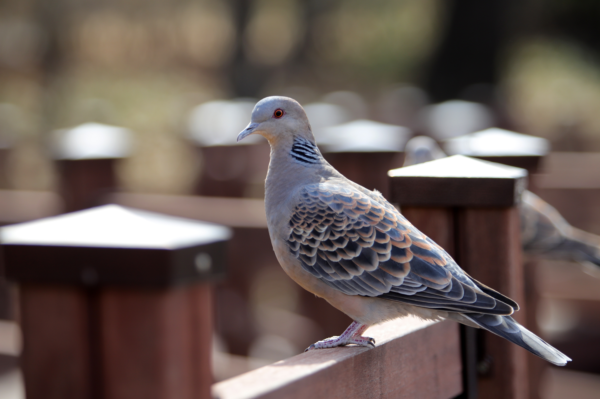

The Oriental Turtle Dove is a medium-sized dove with a relatively long tail, pinkish-brown body, and distinctive black-and-white barred markings on the sides of the neck. It is generally associated with woodland, forest edges, farmland, scrub, gardens, and other areas with trees and open ground. It feeds mainly on seeds and grains and often forages on the ground, sometimes in small groups. Compared with the Laughing Dove, the Oriental Turtle Dove is substantially larger and has a longer, fuller body and more extensive black-and-white neck markings. The Laughing Dove has a smaller spotted neck patch and a warmer, more delicate overall appearance. Compared with the Spotted Dove, the Oriental Turtle Dove is generally larger and has more extensive barred neck markings rather than the Spotted Dove's smaller spotted collar. It also differs from the Eurasian Collared Dove, which has a cleaner pale body and a simple black neck collar rather than complex barred markings. Compared with the Red Collared Dove, the Oriental Turtle Dove is larger and less distinctly reddish, with much stronger patterned markings on the neck. Its large size, long tail, barred neck pattern, and brown overall plumage therefore provide useful identification features when several doves occur together.